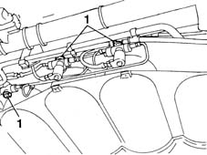
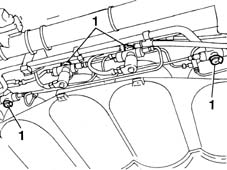
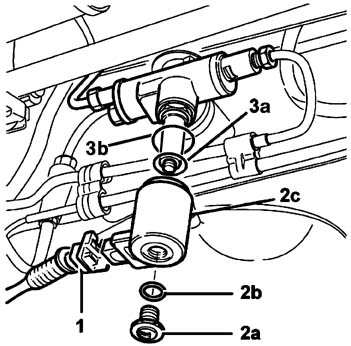
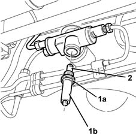
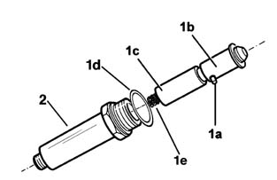
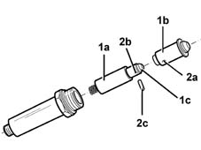
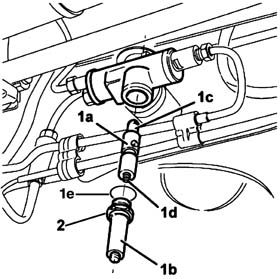
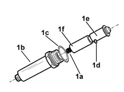

1042A20 INJECTION SYSTEM SOLENOID ON CYLINDER R R
- Path
- Procedures > 10 ENGINE UNIT > 1042 METHANE GAS CANNISTER AND TUBES > 1042A METHANE GAS CANNISTER AND TUBES FOR RE-CHARGING > 1042A20 INJECTION SYSTEM SOLENOID ON CYLINDER R R
- Kind
- repair procedure (removal / refitting; the operation number is the code)
- Applies to
- engines: 1.6 16v; all production periods
- Interactive page
- https://sloeber94.github.io/elrnDB-fMltpl/en/#/2891463
Applies to: engines: 1.6 16v; production: fino a 05/04; only with equipment: BIPOWER and BLUPOWER
Applies to: engines: 1.6 16v; production: fino a 05/04; only with equipment: BIPOWER and BLUPOWER
 Removing
Removing
 Refitting
RefittingPosition the vehicle on a lift.
Start up the vehicle
Applies to: engines: 1.6 16v; production: fino a 05/04; only with equipment: BIPOWER and BLUPOWER
1. Adjust the manual methane cut-off valves to closed position to prevent gas flowing out during the disassembly operations and wait for the system to switch automatically from methane to petrol mode to ensure emptying of the CNG methane circuit and then turn off the engine.

Applies to: engines: 1.6 16v; production: fino a 05/04; only with equipment: BIPOWER and BLUPOWER
1. Adjust the manual methane cut-off valves to closed position to prevent gas flowing out during the disassembly operations and wait for the engine to go off to ensure the CNG methane circuit is empty.

Applies to: engines: 1.6 16v; production: fino a 05/04; only with equipment: BIPOWER and BLUPOWER
Wait for the engine to cool down.
Disconnect the lead of the battery negative terminal.
Put on a helmet with facemask to UNI standard
Applies to: engines: 1.6 16v; production: fino a 05/04; only with equipment: BIPOWER and BLUPOWER
1. Disconnect the electrical connection from the solenoid coil.
Description | Connector | |
|---|---|---|
1 | Methane supply solenoid |
2. Unscrew nut (2a) complete with sealing ring (2b) securing solenoid coil (2c).
3. Unscrew the solenoid drive coil, sealing ring (3a) and metal compression ring (3b).

Applies to: engines: 1.6 16v; production: fino a 05/04; only with equipment: BIPOWER and BLUPOWER
1. Unscrew nut (1a) securing coil lock-ring (1b).
2. Remove the piston unit.

Applies to: engines: 1.6 16v; production: fino a 05/04; only with equipment: BIPOWER and BLUPOWER
1. Remove the plunger-piston unit, complete with spring (1e) and sleeve (2) then remove sealing ring (1d) and take out pin (1a) to separate the piston (1b) from the plunger (1c).

Applies to: engines: 1.6 16v; production: fino a 05/04; only with equipment: BIPOWER and BLUPOWER
Op. 1042A17 SIDE CYLINDER (1), LH OR RH OF CNG CYLINDER UNIT - R R
Applies to: engines: 1.6 16v; production: fino a 05/04; only with equipment: BIPOWER and BLUPOWER
Refitting
Removing1. Fit plunger (1a) into its seat on the new piston (1b) with the tip (1c) of the plunger facing the internal part of the piston.
2. Align the holes (2a) on the new piston with holes (2b) on the plunger, insert the piston unit retaining pin (2c) into the holes aligned previously.

Applies to: engines: 1.6 16v; production: fino a 05/04; only with equipment: BIPOWER and BLUPOWER
1. Insert spring (1d) into the seat on the plunger then insert the piston-plunger unit (1a) into the sleeve (1b), adjusting it so that the tapered part (1c) of the piston faces the valve assembly.
2. Tighten the nut securing the coil lock-ring to the specified torque.
Fastening | Component | Ø | Value (daNm) | |
|---|---|---|---|---|
2 | Nut | SOLENOID COIL HOLDER COLLAR | - | 2.8 |

Applies to: engines: 1.6 16v; production: fino a 05/04; only with equipment: BIPOWER and BLUPOWER
Fit the coil and secure by means of the nut with sealing ring.
Fastening | Component | Ø | Value (daNm) | |
|---|---|---|---|---|
- | Nut | SOLENOID COIL ON CYLINDER | - | 0.9 |
Connect the electrical connector to the methane supply solenoid coil.
Description | Connector | |
|---|---|---|
- | Methane supply solenoid |
Place the CNG manual cut out valves in open position and check the seal of affected components during disassembly.
Connect the negative lead of the battery.
Applies to: engines: 1.6 16v; production: fino a 05/04; only with equipment: BIPOWER and BLUPOWER
Using an Examiner tester in ACTIVE DIAGNOSIS mode, select and run the "GAS SOLENOID RELAY" procedure to allow:
- solenoid opening and restoration of service pressure in the CNG system;
- reading of the pressure by the sensor (located on the pressure reduction unit in the engine compartment) that must be 10 bars, otherwise it would not be possible to switch from petrol to methane.
Remove the vehicle from the lift.
After any service or maintenance operation that involved working on the sealing fittings or handling pressurised components, search for methane gas (CNG) leaks as follows.
Carry out a road test by driving for 5-10 km in in methane (CNG) gas mode.
Return the vehicle to the workshop and position on a lift.
Use an electronic detector (GAS DETECTRON L.P.G. - CNG - by GIGATRON or similar device) to find any gas leaks. Test every part and every single CNG system pipe along the underbody and in the engine compartment.
If the electronic detector fails to identify any leaks, the vehicle has passed the inspection and can leave the workshop.
Otherwise, use the electronic detector to localise the leaking system section, then spread the parts with a leak detection foam (manufactured by BRC - code 90AV99000052 or similar product) in order to identify the exact point of the leak.
Investigate the part to find out the cause of the leak (loose fittings, failure to replace sealing rings, defective part) and carry out the required repair operation.
Repeat the road test and the leak detection procedure until the problem is fully resolved.
Applies to: engines: 1.6 16v; production: da 06/04; only with equipment: BIPOWER
Removing
RefittingPosition the vehicle on a lift.
Applies to: engines: 1.6 16v; production: da 06/04; only with equipment: BIPOWER
Proceed with draining the high pressure circuit following the instructions in the specific operation
Op. 1042A02 C.N.G. - FUEL SYSTEM SAFETY CHECK
Wait for the engine to cool down.
Applies to: engines: 1.6 16v; production: da 06/04; only with equipment: BIPOWER
1. Disconnect the electrical connection from the solenoid coil.
Description | Connector | |
|---|---|---|
1 | Methane supply solenoid |
2. Unscrew nut (2a) complete with sealing ring (2b) securing solenoid coil (2c).
3. Withdraw the solenoid drive coil, sealing ring (3a) and metal compression ring (3b).
Applies to: engines: 1.6 16v; production: da 06/04; only with equipment: BIPOWER
1. Unscrew nut (1a) securing coil lock-ring (1b).
2. Remove the piston unit.
Applies to: engines: 1.6 16v; production: da 06/04; only with equipment: BIPOWER
1. Remove the plunger - piston unit with spring (1a), sleeve (1b) and then remove the sealing ring (1c) and remove the pin (1d) to separate the piston (1e) from the plunger (1f).

Applies to: engines: 1.6 16v; production: da 06/04; only with equipment: BIPOWER
Refitting
Removing1. Fit plunger (1a) into its seat on the new piston (1b) with the plunger tip (1c) facing the inner part of the piston.
2. Align holes (2a) on the new piston with holes (2b) on the plunger. Insert piston retaining pin (2c) into the holes aligned previously.
Applies to: engines: 1.6 16v; production: da 06/04; only with equipment: BIPOWER
1. Insert spring (1d) into the seat on the plunger, then fit the piston - plunger assembly (1a) into the sleeve (1b). Adjust it so that the tapered part (1c) of the piston faces the valve assembly.
2. Tighten the nut securing the coil lock-ring to the specified torque.
Fastening | Component | Ø | Value (daNm) | |
|---|---|---|---|---|
2 | Nut | SOLENOID COIL HOLDER COLLAR | - | 2.8 |
Applies to: engines: 1.6 16v; production: da 06/04; only with equipment: BIPOWER
Fit the coil and secure by means of the nut with sealing ring.
Fastening | Component | Ø | Value (daNm) | |
|---|---|---|---|---|
- | Nut | SOLENOID COIL ON CYLINDER | - | 0.9 |
Connect the electrical connector to the methane supply solenoid coil.
Description | Connector | |
|---|---|---|
- | Methane supply solenoid |
Move the manual methane cut-off valves to open position and ensure that affected parts are sealed during disassembly.
Applies to: engines: 1.6 16v; production: da 06/04; only with equipment: BIPOWER
Connect the Examiner diagnostic equipment in the "Active Diagnosis" mode, select and run "Gas solenoid valve relay" item in order to allow the opening of the solenoid valves and restoration of the CNG system operating pressure; read the pressure value on the sensor located on the pressure reduction unit in the engine compartment which should be greater than or equal to 14 bar, otherwise it will not be possible to switch from petrol to methane.
Op. 1042A06 C.N.G. - FUEL SYSTEM CHECK FOR ANY LEAKS USING ELECTRONIC DETECTOR FOLLOWING OPERATIONS
Remove the vehicle from the lift.
Topics linked from this page (4)
- 1042A02 C.N.G. - FUEL SYSTEM SAFETY CHECK
- 1042A06 C.N.G. - FUEL SYSTEM CHECK FOR ANY LEAKS USING ELECTRONIC DETECTOR FOLLOWING OPERATIONS
- 1042A17 (One), side CANISTER left or right, for CNG CANISTER ASSEMBLY - R.R.
- L60 Methane supply solenoid